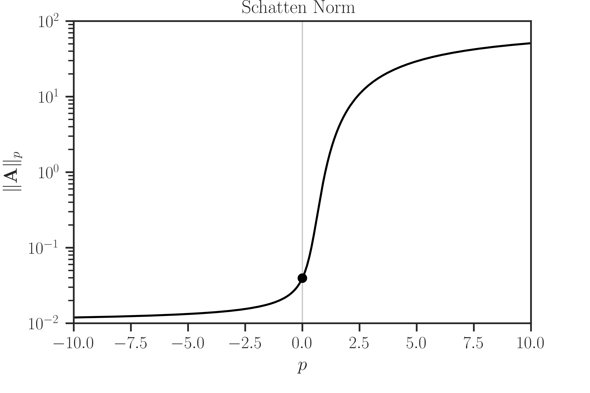

pyrand.schatten#
- pyrand.schatten(A, gram=False, p=2.0, return_info=False, method='eigenvalue', **options)#
Schatten p-norm and p-anti-norm of matrix.
- Parameters:
- Anumpy.ndarray, scipy.sparse,
pyrand.Matrix, orpyrand.AffineMatrixFunction A non-singular sparse or dense matrix or linear operator. The linear operators
pyrand.Matrixandpyrand.AffineMatrixFunctioncan be used only ifmethod=slq. Ifmethod=cholesky, the matrix A should be positive-definite. Ifmethod=slqandgram=False, the input matrix A should be symmetric.- grambool, default=False
If False, this function computes the Schatten norm \(\Vert \mathbf{A} \Vert_p\). If True, it computes the Schatten norm of the Gramian matrix, namely, \(\Vert \mathbf{A}^{\intercal} \mathbf{A} \Vert_p\).
- pfloat, default=2.0
The real order \(p\) in \(\Vert \mathbf{A} \Vert_p\). If \(p>0\), the output is the Schatten norm and if \(p<0\), the output is the Schatten anti-norm.
- return_infobool, default=False
If True, this function also returns a dictionary containing information about the inner computation, such as process time, algorithm settings, etc. See the documentation for each method for details.
- method{‘exact’, ‘eigenvalue’, ‘cholesky’, ‘hutchinson’, ‘slq’}, default=’eigenvalue’
The method of computing Schatten norm. Note that
exactis only available for \(p>0\)choleskyis only available for \(p \leq 0\).hutchinsonis only available for \(p < 0\).
- options**kwargs
Extra arguments that are specific to each method and \(p\). Depending on the sign of \(p\), the options of this function is passed to the following functions:
If \(p > 0\), see options for
pyrand.trace(). In particular:If \(p = 0\), see options for
pyrand.logdet(). In particular:If \(p < 0\), see options for
pyrand.traceinv(). In particular:
- Anumpy.ndarray, scipy.sparse,
- Returns:
- normfloat or numpy.array
Schatten norm of matrix. If
method=slqand if A is of typepyrand.AffineMatrixFunctionwith an array ofparameters, then the output is an array.- infodict
(Only if
return_infois True) A dictionary of information with at least the following keys. Further keys specific to each method can be found in the documentation of each method.matrix:data_type: str, {float32, float64, float128}, type of the matrix data.gram: bool, whether the matrix A or its Gramian is considered.exponent: float, the order p of the norm.size: int, The size of matrix A.sparse: bool, whether the matrix A is sparse or dense.nnz: int, if A is sparse, the number of non-zero elements of A.density: float, if A is sparse, the density of A, which is the nnz divided by size squared.num_inquiries: int, The size of inquiries of each parameter of the linear operator A. If A is a matrix, this is always 1. For more details see slq method.
device:num_cpu_threads: int, number of CPU threads used in shared memory parallel processing.num_gpu_devices: int, number of GPU devices used in the multi-GPU (GPU farm) computation.num_gpu_multiprocessors: int, number of GPU multi-processors.num_gpu_threads_per_multiprocessor: int, number of GPU threads on each GPU multi-processor.
time:tot_wall_time: float, total elapsed time of computation.alg_wall_time: float, elapsed time of computation during only the algorithm execution.cpu_proc_time: float, CPU processing time of computation.
solver:version: str, version of pyrand.method: str, method of computation.
- Raises:
- LinAlgError
If
method=choleskyand A is not positive-definite.- ImportError
If the package has not been compiled with GPU support, but
gpuis True. Either setgputo False to use the existing installed package. Alternatively, export the environment variableUSE_CUDA=1and recompile the source code of the package.
Notes
Definition of the Norm:
This function defines the Schatten \(p\)-norm of matrix \(\mathbf{A}\) as
(1)#\[\begin{split}\Vert \mathbf{A} \Vert_p = \begin{cases} \left| \mathrm{det}(\mathbf{A}) \right|^{\frac{1}{n}}, & p=0, \\ \left| \frac{1}{n} \mathrm{trace}(\mathbf{A}^{p}) \right|^{\frac{1}{p}}, & p \neq 0, \end{cases}\end{split}\]where \(n\) is the size of the matrix. When \(p \geq 0\), the above definition is the Schatten norm, and when \(p < 0\), the above is the Schatten anti-norm.
Note
Conventionally, the Schatten norm is defined without the normalizing factor \(\frac{1}{n}\) in (1). However, this factor is justified by the continuity granted by
(2)#\[\lim_{p \to 0} \Vert \mathbf{A} \Vert_p = \Vert \mathbf{A} \Vert_0.\]See [1] (Section 2) for details and the example below.
Method and Options Arguments:
The
pyrand.schatten()calls the following functions:If \(p > 0\), the computation is passed to
pyrand.trace()function.If \(p = 0\), the computation is passed to
pyrand.logdet()function.If \(p < 0\), the computation is passed to
pyrand.traceinv()function.
The
methodand**optionsarguments to this functions are then passed to the above functions directly. Hence, depending on the sign of \(p\), see usage of the arguments in the documentation of the above functions.References
[1]Ameli, S., and Shadden. S. C. (2022). Interpolating Log-Determinant and Trace of the Powers of Matrix \(\mathbf{A} + t \mathbf{B}\). arXiv: 2009.07385 [math.NA].
Examples
Basic Usage:
Compute Schatten norm for various orders \(p\):
>>> # Import packages >>> from pyrand import schatten >>> from pyrand.sample_matrices import correlation_matrix >>> # Generate a sample matrix >>> A = correlation_matrix(size=1000) >>> # Compute Schatten 2-norm using the default (eigenvalue) method >>> schatten(A) 9.742355891729794 >>> # Compute Schatten 2-norm of the Gramian of A >>> schatten(A, gram=True) 1459.9826900202575 >>> # Compute Schatten 0-norm >>> schatten(A, p=0, method='cholesky') 0.019898820919266435 >>> # Compute Schatten 2-anti-norm >>> schatten(A, p=-2, method='cholesky') 0.008178429155178678
Verbose output:
By setting
verboseto True, useful info about the process is printed.Output information:
Print information about the inner computation:
>>> norm, info = schatten(A, method='slq', return_info=true) >>> print(norm) 9.873304126858432 >>> # Print dictionary neatly using pprint >>> from pprint import pprint >>> pprint(info) { 'matrix': { 'data_type': b'float64', 'density': 1.0, 'exponent': 2, 'gram': False, 'nnz': 1000000, 'num_inquiries': 1, 'num_operator_parameters': 0, 'parameters': None, 'size': 1000, 'sparse': False }, 'convergence': { 'all_converged': False, 'converged': False, 'max_num_samples': 50, 'min_num_samples': 10, 'num_outliers': 1, 'num_samples_used': 50, 'samples': array([165444.12035971, ..., 38852.18934236]), 'samples_mean': 97482.13438143977, 'samples_processed_order': array([ 6, ..., 47]) }, 'error': { 'absolute_error': 17071.631543126343, 'confidence_level': 0.95, 'error_atol': 0.0, 'error_rtol': 0.01, 'outlier_significance_level': 0.001, 'relative_error': 0.17512574638883488 }, 'solver': { 'lanczos_degree': 20, 'lanczos_tol': 2.220446049250313e-16, 'method': 'slq', 'orthogonalize': 0, 'version': '0.16.0' }, 'device': { 'num_cpu_threads': 4, 'num_gpu_devices': 0, 'num_gpu_multiprocessors': 0, 'num_gpu_threads_per_multiprocessor': 0 }, 'time': { 'alg_wall_time': 0.4813501834869385, 'cpu_proc_time': 1.4557350500000004, 'tot_wall_time': 0.48481535189785063 } }
Large Matrix:
Compute Schatten of a large sparse matrix using SLQ method for \(p > 0\). In this case, the computation is passed to pyrand.trace(method=’slq’) function. Note that the SLQ method does not compute norm exactly, rather, the result is an approximation using Monte-Carlo sampling. The following example uses at least 100 samples.
Note
To see options passed to
pyrand.schatten()for \(p > 0\) in the example below, see the parameters of pyrand.trace(method=’slq’) function. In particular, note that the input matrix A should be symmetric as a requirement to the SLQ method.>>> # Generate a matrix of size one million >>> from pyrand import toeplitz >>> A = toeplitz(2, 1, size=1000000, gram=True) >>> # Approximate log-determinant using stochastic Lanczos quadrature >>> # with at least 100 Monte-Carlo sampling >>> norm, info = schatten(A, p=2.5, method='slq', min_num_samples=100, ... max_num_samples=200, return_info=True) >>> print(norm) 4.049580819943461 >>> # Find the time it took to compute the above >>> print(info['time']) { 'tot_wall_time': 16.129820372909307, 'alg_wall_time': 16.115617752075195, 'cpu_proc_time': 117.41655239300007 }
Continuity of Norm in Order p:
Check the continuity of the Schatten norm over the order \(p\). Here, the eigenvalue method is used as it can be applied to positive, negative, and zero order \(p\) among other methods.
>>> # Importing packages >>> import numpy >>> import matplotlib.pyplot as plt >>> import seaborn as sns >>> from pyrand.sample_matrices import correlation_matrix >>> from pyrand import schatten >>> # Plot settings (optional) >>> sns.set(font_scale=1.15) >>> sns.set_style("white") >>> sns.set_style("ticks") >>> # Generate a sample matrix >>> A = correlation_matrix(size=500) >>> # Compute norm over a range of order p, including p=0 >>> p = numpy.linspace(-10, 10, 201) >>> norm = numpy.zeros_like(p) >>> for i in range(p.size): ... norm[i] = schatten(A, p=p[i], method='eigenvalue') >>> # Norm at p=0 >>> norm0 = schatten(A, p=0, method='eigenvalue') >>> # Plotting >>> plt.semilogy(p, norm, color='black') >>> plt.semilogy(0, norm0, 'o', color='black') >>> plt.xlim([p[0], p[-1]]) >>> plt.ylim([1e-2, 1e2]) >>> plt.xlabel('$p$') >>> plt.ylabel('$\Vert \mathbf{A} \Vert_p$') >>> plt.title(r'Schatten Norm') >>> plt.show()
Since the Schatten norm in this function is defined as in (1), the norm is continuous at \(p = 0\). See (2).
{kind=link}